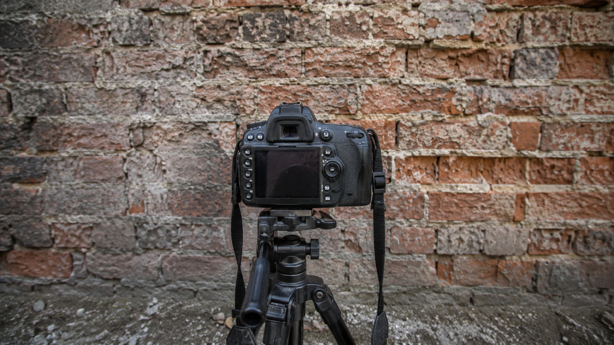

← BACK TO DOSSIERS LIST
CALIBRATION CASE FILE // TREND: STOP USING HYPERREALISTIC IN YOUR PROMPTS
Forensic Camera Realism: Calibrating a Tripod Setup Against Raw Brick Surface Behavior
DATE: 2026-07-11
STATUS: EVIDENCE_DETECTION
ENGINE: CHATGPT DALL-E 3

SPECIMEN IMAGE #16:9 - CLEAN OPTICS
Many AI-generated images of camera equipment suffer from the same visual repetition: spotless gear, flawless textures, dramatic lighting, and exaggerated sharpness. Real photographic environments rarely behave this way. A camera setup pointed at a brick wall becomes far more convincing when the scene contains ordinary material wear, uneven lighting behavior, surface contamination, and the subtle imperfections that emerge from actual use.
To understand why this matters, we need to examine the physical structure of the scene layer by layer. The camera, tripod, wall, light, and sensor each contribute their own form of realism. Yet the deeper calibration challenge is not visual at all. The true control point sits inside language itself. The calibration console at the end of the dossier reveals how small lexical substitutions fundamentally alter the realism profile of an image simulation.
This is where lexicon shift becomes measurable. Replacing phrases such as "perfect brick wall" with descriptions of chipped mortar, dust accumulation, and uneven aging increases material plausibility. Replacing "cinematic lighting" with physically observed ambient illumination changes exposure behavior, shadow structure, and surface readability. Calibration metrics therefore move away from aesthetic optimization and toward observational fidelity, environmental entropy, optical limitation, and realistic texture retention.
When we return to the original problem, the solution becomes clear: realism is rarely created through more detail, but through more believable information behavior. Understanding these language-level controls allows creators to generate images that feel physically observed rather than artificially designed. For a deeper calibration framework, explore ALPHA REALISM and study the complete methodology behind camera-grade realism extraction. Advanced creators can continue the process with the full ALPHA REALISM Guide and its structured calibration system.
The 5 Layers of Reality Applied
Subject:
A camera mounted on a tripod facing a brick wall at close-to-medium distance. The camera body shows ordinary use, subtle handling marks, minor dust accumulation around controls, realistic strap attachment points, and non-stylized equipment placement. The tripod legs are unevenly extended according to floor conditions, with practical locking mechanisms and slight surface wear.
Environment:
Available ambient light creates uneven illumination across the brick surface. Mortar lines vary in brightness, with localized shadow pockets inside recessed areas. The wall contains chipped edges, discoloration, dust accumulation, moisture staining, and irregular texture retention. Light falloff is gradual rather than dramatic, producing observational rather than theatrical contrast.
Physics:
Gravity affects the tripod stance, causing realistic weight distribution through the legs. Small reflections appear on metallic tripod components. Brick texture produces micro-shadow variation based on surface depth. Dust settles naturally along horizontal mortar edges. Minor environmental airflow may introduce negligible movement in loose camera straps while all structural elements remain static.
Time:
The brick wall exhibits aging through chipped paint traces, surface erosion, accumulated dust, faded coloration, moisture marks, and uneven material fatigue. The tripod shows realistic usage wear at leg joints and contact points. The camera body contains subtle handling polish and ordinary signs of repeated operation rather than pristine condition.
Camera:
Documentary-style capture using a full-frame or APS-C camera simulation with a 35mm to 50mm equivalent focal length. Slight edge softness, realistic lens microcontrast, subtle chromatic aberration near high-contrast brick edges, moderate sensor grain, natural highlight clipping, mild shadow noise, physically plausible texture retention, and non-cinematic optical behavior.
The Lexicon Shift Table
| Appearance (Dead Adjective) |
|
Living Event (Cause & Effect) |
| perfect brick wall |
➔ |
weathered brick surface with chipped edges, mortar irregularities, dust accumulation, and uneven discoloration |
| cinematic lighting |
➔ |
available ambient light producing uneven illumination and natural shadow variation |
| ultra sharp texture |
➔ |
realistic texture retention with localized softness and material depth variation |
| professional tripod setup |
➔ |
practical tripod placement showing ordinary usage wear and uneven stance adaptation |
| perfect camera gear |
➔ |
camera equipment displaying subtle handling marks, dust traces, and operational wear |
| flawless composition |
➔ |
observational framing prioritizing documentation over aesthetic optimization |
Calibration Prompt Console
SUBJECT: A documentary-style photograph of a camera mounted on a tripod aimed directly at a raw brick wall, camera body showing ordinary handling wear, subtle dust accumulation, realistic control surfaces, practical tripod deployment, non-stylized equipment positioning. ENVIRONMENT: Weathered brick wall with chipped edges, irregular mortar lines, accumulated dust, faded coloration, localized moisture staining, uneven surface depth, observational workspace realism, natural environmental disorder. PHYSICS: Gravity-dependent tripod stance, realistic weight distribution, subtle metallic reflections, micro-shadow breakup across recessed brick textures, physically plausible material interaction, naturally occurring surface imperfections. TIME: Visible aging in brick materials, accumulated environmental fatigue, minor equipment wear, practical texture degradation, signs of repeated use rather than pristine presentation. CAMERA: Documentary optical behavior, 35mm-50mm equivalent focal length, slight edge softness, realistic microcontrast, subtle chromatic aberration, moderate sensor grain, natural highlight clipping, mild shadow noise, physically plausible dynamic range, authentic texture retention, non-cinematic realism, anti-CGI observational photography --ar 16:9
Do you want to generate precise AI images?
Unlock our alpha realism blueprint, physical reliable framework to get the best of your creations with the ALPHA REALISM Guide.
Download Ebook Now